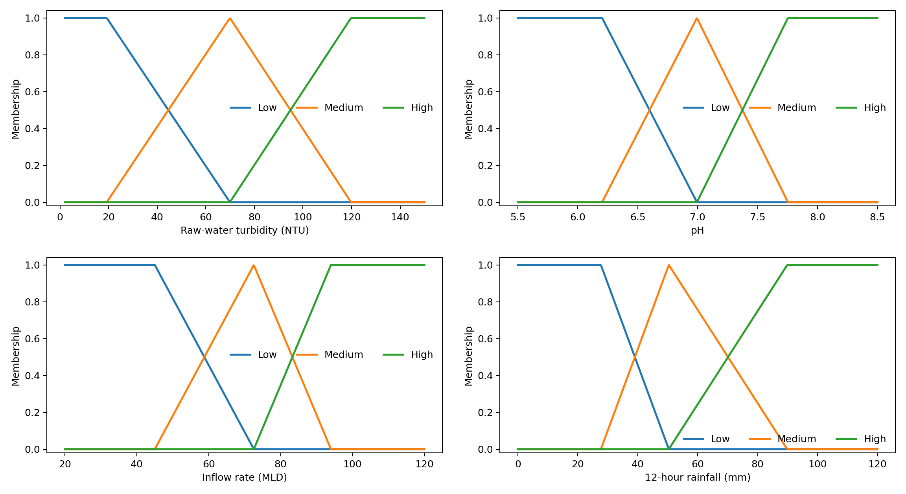
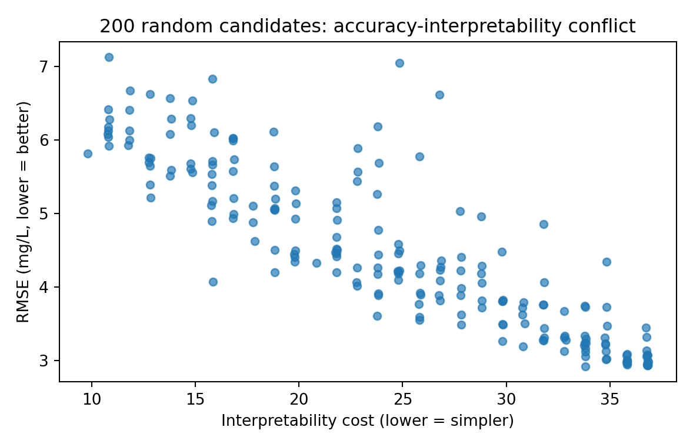
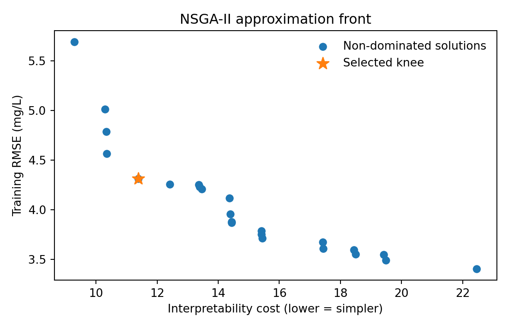

Coagulant dosing at a water treatment plant
A sparse zero-order TSK fuzzy controller tuned with a from-scratch NSGA-II. It converts raw-water turbidity, pH, inflow and 12-hour rainfall into the next-hour alum dose while making the accuracy–interpretability trade-off explicit.
1. The decision
Inputs
Raw-water turbidity (2–150 NTU)
pH (5.5–8.5)
Inflow (20–120 MLD)
12-hour rainfall (0–120 mm)
Output
Alum dose for the next hour (mg/L)
Synthetic coursework model; not a real-plant calibration.
2. Formulation & data
We generated 420 observations with seed 20260909 and Gaussian output noise SD 2.2 mg/L. The documented ground truth is nonlinear in turbidity, pH deviation, flow and rainfall, with turbidity×rainfall and flow×rainfall interactions.
dose = clip[8 + 42√t + 8f + 12r + 14q + 10tr + 4fr, 6, 86] mg/Lt, f, r are normalized; q = min(|pH−7.0|/1.5, 1.2).
Chromosome size: 4×3 MF knots + 36 TSK consequents + 27 optional rule gates = 75 genes. The binary gates alone define 2²⁷ = 134,217,728 possible rule subsets.
3. System design
We use zero-order TSK because the output is a numeric mg/L setpoint. Nine Turbidity×pH rules are mandatory for coverage; 27 correction rules may be pruned. Decoder guards preserve semantic ordering and minimum overlap.
Encoding. The chromosome is mixed: 12 real-valued membership knots, 36 real-valued rule consequents and 27 binary rule gates. Operators respect that boundary — arithmetic blend and Gaussian nudges on the real segment, uniform selection and bit flips on the gate segment. The alternative we rejected was a fully binary encoding with every real parameter quantised into bits; we rejected it because flipping a high-order bit moves a dose by tens of mg/L, so neighbouring bit strings are not neighbouring controllers.

4. Hybrid and conflicting objectives
Conventions. Both objectives are written as minimisations; nothing is maximised anywhere in the search, so no sign is ever flipped inside the dominance test. Coverage is treated as a constraint, not as a third objective: the nine mandatory Turbidity×pH rules carry wildcards for flow and rainfall, which makes a zero-firing input impossible by construction. Any residual shortfall would be penalised at 50 mg/L per unit of uncovered fraction — a penalty that never triggered in any run reported here.

NSGA-II is implemented from scratch: non-dominated sorting, crowding distance, tournament selection, crossover, mutation and elitist environmental selection. Random Search, Scalarised GA and NSGA-II all receive 312 candidate evaluations per seed.
Remove one component and this is what breaks
| Component | What breaks |
|---|---|
| Tournament selection | No preferential reproduction, so there is no pressure towards better regions at all; the run degrades into a random walk. |
| Crossover | Only parallel hill climbing remains — the one mechanism that combines two partial solutions is gone. |
| Mutation | Only the material present in the initial population can ever be recombined; once diversity is gone it is gone and the run stalls. |
| Elitism (parent + child merge) | A rank-1 solution can be destroyed by its own children, and the front can end worse than it was halfway through. |
| Crowding distance | The surviving front clusters into one corner — still non-dominated, but no longer a usable menu. |
Parents and children are merged before environmental selection, so elitism is structural and a rank-1 solution cannot be lost. We report the knee of the final merged front; we never read “the best of the last generation” as the result.
5. Benchmarking
| Method | Test RMSE (mg/L) | Best of 30 seeds | Interpretability cost |
|---|---|---|---|
| Untuned expert fuzzy | 6.356 ± 0.334 | 5.807 | 36.00 ± 0.00 |
| Random search | 5.460 ± 0.684 | 4.429 | 16.82 ± 5.23 |
| Scalarised GA | 4.296 ± 0.380 | 3.464 | 17.07 ± 2.02 |
| Polynomial ridge | 2.155 ± 0.101 | 1.984 | - |
| NSGA-II TSK (knee) | 4.804 ± 0.471 | 3.933 | 14.43 ± 1.77 |
30 independent 70/30 splits; population 24 × 12 generations = 312 evaluations per search method; data seed 20260909; output noise SD 2.2 mg/L; scalarisation λ = 0.10; interpretability cost = active rules + 1.5 × normalised semantic drift. Values are mean ± SD, with the best (lowest) test RMSE seen across the 30 seeds reported alongside. One run of a stochastic method is one sample, so the mean and SD — not the best value — carry the claim. Polynomial ridge is the non-fuzzy baseline.
Paired Wilcoxon tests
| Comparison | W | p |
|---|---|---|
| NSGA-II vs Untuned expert fuzzy | 0 | 1.863e-09 |
| NSGA-II vs Random search | 39 | 1.397e-05 |
| NSGA-II vs Scalarised GA | 44 | 2.689e-05 |
| NSGA-II vs Polynomial ridge | 0 | 1.863e-09 |
Paired two-sided Wilcoxon signed-rank test on the 30 per-seed test RMSE values (NSGA-II knee versus each comparator); α = 0.05.
6. Approximation front & recommendation

The front as a table
| # | Train RMSE (mg/L) | Interpretability cost | Note |
|---|---|---|---|
| 1 | 3.404 | 22.46 | most accurate end |
| 2 | 3.490 | 19.48 | |
| 3 | 3.548 | 19.42 | |
| 4 | 3.552 | 18.49 | |
| 5 | 3.596 | 18.44 | |
| 6 | 3.607 | 17.44 | |
| 7 | 3.675 | 17.43 | |
| 8 | 3.714 | 15.44 | |
| 9 | 3.753 | 15.42 | |
| 10 | 3.788 | 15.41 | |
| 11 | 3.867 | 14.44 | |
| 12 | 3.879 | 14.44 | |
| 13 | 3.956 | 14.39 | |
| 14 | 4.115 | 14.36 | |
| 15 | 4.206 | 13.46 | |
| 16 | 4.232 | 13.39 | |
| 17 | 4.252 | 13.36 | |
| 18 | 4.255 | 12.42 | |
| 19 | 4.312 | 11.38 | knee - recommended |
| 20 | 4.564 | 10.36 | |
| 21 | 4.788 | 10.34 | |
| 22 | 5.012 | 10.29 | |
| 23 | 5.690 | 9.29 | sparsest end |
Reference run: population 48, 50 generations, seed 90909; 23 non-dominated points, sorted by training RMSE. No row is better than any other without a stated preference — the choice between them belongs to the shift operator, not to the algorithm.
Use the starred knee as the default advisory controller. It keeps the nine base coverage rules and only two interaction rules. Concretely: moving from the knee (training RMSE 4.312, interpretability cost 11.38) to the most accurate point on the front (3.404, cost 22.46) buys 0.91 mg/L for roughly double the interpretability cost — is that worth it to you? Moving the other way, the sparsest point (5.690, cost 9.29) saves 2.09 units of cost and gives up 1.38 mg/L. We recommend the knee because beyond it each additional rule buys progressively less error.
7. Shipped rule base
R01: IF raw-water turbidity is Low AND pH is Low THEN alum dose = 41.3 mg/L.R02: IF raw-water turbidity is Low AND pH is Medium THEN alum dose = 29.1 mg/L.R03: IF raw-water turbidity is Low AND pH is High THEN alum dose = 39.5 mg/L.R04: IF raw-water turbidity is Medium AND pH is Low THEN alum dose = 56.9 mg/L.R05: IF raw-water turbidity is Medium AND pH is Medium THEN alum dose = 43.5 mg/L.R06: IF raw-water turbidity is Medium AND pH is High THEN alum dose = 54.7 mg/L.R07: IF raw-water turbidity is High AND pH is Low THEN alum dose = 67.5 mg/L.R08: IF raw-water turbidity is High AND pH is Medium THEN alum dose = 57.1 mg/L.R09: IF raw-water turbidity is High AND pH is High THEN alum dose = 65.7 mg/L.R10: IF raw-water turbidity is Low AND 12-hour rainfall is Low THEN alum dose = 27.1 mg/L.R15: IF raw-water turbidity is Medium AND 12-hour rainfall is High THEN alum dose = 57.0 mg/L.
8. Narrated video
All three voices · technical sections shared · unlisted link
9. Report & code
Open the 6-page PDF report · Code folder · Benchmark summary · Pareto front data
10. Declarations
AI use: Page layout and language refinement were assisted by ChatGPT; all code execution, experimental results, figures, analysis, and final interpretation were verified by the team.
Contribution statement: XU HAOWEI implemented the synthetic data generator, the zero-order TSK model, the from-scratch NSGA-II optimiser and the 30-seed experiment harness, validated every reported number and figure, built this page and the PDF report, and narrates the decision, formulation and results sections. And owns the fuzzy-system section and its reflection. BAO YUHANG owns the hybrid-optimiser and recommendation sections and their reflection. All members reviewed the shipped rule base together.